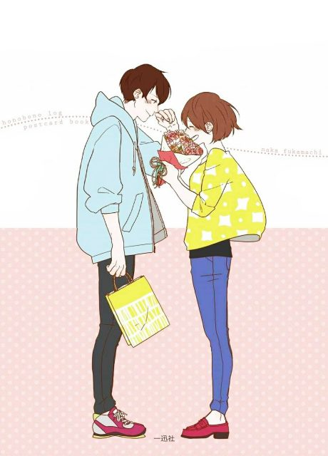

Honobono Log
ほのぼのログ
Short scenes from the everyday lives of couples and families, adapted from Naka Fukamachi's illustrations.
An original anime, so there's no book to continue with.
7.1AniList score
—Animeter, no votes yet
10episodes
Rate it or report where you stopped
Is there a manga to continue?
StatusOriginal
An anime original, so there is no manga to pick up from.
Sources: AniList, MyAnimeList
More like Honobono Log
 Manga Ch. 1077.7
Manga Ch. 1077.7
 Done8.1
Done8.1
 Manga Ch. 298.1
Manga Ch. 298.1
 Manga Ch. 568.0
Manga Ch. 568.0
 Manga Ch. 417.2
Manga Ch. 417.2
 Manga Ch. 487.4
Manga Ch. 487.4
 Manga Ch. 417.2
Manga Ch. 417.2
Manga Vol. 57.2
Days with My Stepsister Manga Ch. 577.1
Manga Ch. 577.1
 Unclear8.4
Unclear8.4
 Unclear7.5
Unclear7.5
 Manga Ch. 647.3
Manga Ch. 647.3